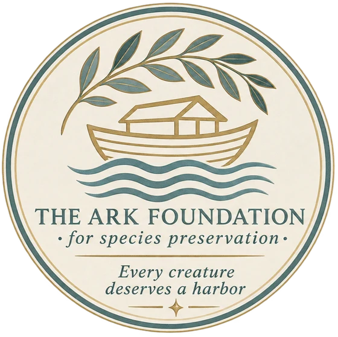

The Demi-Human World
For centuries, demis hid in the forests. Today they live in cities, go to work and stand in line for paperwork, yet to most people they are still just "clever pets".
The world in brief
Psychologically, demis are no different from humans: human thinking, empathy, imagination. Animal instincts have almost vanished and survive only in a few closed communities.
A demi can be a human or an animal and shifts at will, but no more than once every four hours and only with focus. Their natural form is human.
The animal form is indistinguishable from an ordinary animal. In human form a demi keeps 2–3 animal features and 1–2 slightly heightened abilities of their species.
The body ages at the pace of the current form, and that affects both forms. A year as a cat turns a demi into a teenager; ten years, into someone 55–60 years old.
Children are only possible between demis of the same species or between a demi and a human. They are born in human form and start shifting at 3–5.
On paper, demis are almost equal to humans, but they carry extra documents and a chip. The underground demi trade thrives, and demis stick together.
Archive sections
A demi-human is a sentient humanoid being that has biologically inherited some traits of a particular animal species. Demis evolved alongside humans.
Two forms
Almost human
- Always 2–3 animal features: ears, a tail, claws, fangs, wings — depending on the species.
- Skin without fur, ordinary human pupils. Only the eye colour may be unusual.
- 1–2 species abilities. Not magic, just a slightly heightened human ability: sharper smell or hearing, a little more strength or stamina, better night vision.
Indistinguishable from an animal
- A demi is identical to an animal of their species. Humans can barely tell them apart, except by a too-knowing gaze or understanding of speech.
- Mind, memory and understanding of speech remain, but they cannot talk: an animal's throat isn't built for it.
- Ordinary animals instantly sense that a demi is "not one of them" and often react warily or aggressively. Demis can only talk to them through body language.
Growth and age
Demis are born in human form and grow up like ordinary people. If a demi prefers the animal form, they develop faster — at the pace of their species. Both forms are linked: time spent in one ages the other too.
Instincts
Almost no living demis have them. Instincts survive only in communities that split off from humans and other demis long ago: in isolation, evolution slowed down.
Health
Demis catch both human illnesses and those of their species. So they are treated by doctors and vets alike, depending on the illness.
Reproduction and inheritance
Always a demi of that species
Different species cannot have children, so species never mix. A demi she-wolf can only conceive with a demi wolf, never with a demi dog.
Less predictable
It doesn't matter which partner is the man and which is the woman: the odds are the same. A demi child is always the same species as the demi parent.
Conception is possible only in human form.
How shifting works
How long a shift takes, depending on the size difference between forms.
Not painful but unpleasant: a deep ache, as if pulled in every direction. Afterwards, tiredness and hunger.
Not conserved: a 70 kg demi wolf weighs as much as an ordinary wolf. Where it goes, scientists don't know.
Don't change with the body and simply fall off. So demis wear loose clothes, and there are brands with slits for tails and wings.
Moves: between the collarbones in human form, on the scruff in animal form.
Limits
- At least four hours between shifts. Until then, there is no going back.
- Injuries carry over equally from one form to the other.
- Shifting takes focus: in strong agitation, in pain or with a clouded mind, it won't work.
The first shift
- Happens at 3–5, almost always on its own: in sleep, in warmth, in complete calm.
- Children learn to control it with their parents' help, and by 7–10 most shift at will.
- Parents make sure a child doesn't stay too long in animal form: a few months as a kitten or puppy can "steal" years of childhood.
Special cases
- Shifting is extremely dangerous during pregnancy: in animal form the baby may die, so doctors forbid it for the whole term.
- Alcohol, strong medication and drugs make it hard to focus, so shifting becomes very difficult.
- Demis who live as animals for months or years pick up the habits of their species. These aren't instincts, but going back to a human life is hard.

A thousand years in the shadows
At first humans had no idea demis were sentient and took them for strange mutant animals: back then their animal traits were far more pronounced. Demis lived in packs or alone in forests, fields and deserts.
The birth of culture
Human thinking fully formed in demis, along with their own culture, morals and laws. They gathered into tribes — at first related species, "predators" or "prey", to survive more easily.
The boldest went out to explore the world and met humans. Some taught demis crafts and letters, some ran to church, some attacked. Thanks to the calmer humans, the tribes grew into real hidden settlements.
Felled forests and plague
The human population grew, forests were cleared for fields, and demi settlements became easy to find. Small "wars" began: humans found strange houses in the woods and attacked at night.
The plague of the mid-14th century brought a respite — abandoned land grew back into forest. But in many places demis were blamed for the pestilence, and the attacks grew even crueller.
Stepping out to humans
Demis realised they couldn't hide forever and began sending disguised scouts into towns. They came back and taught the rest: weapons, economics, religions, writing.
That was also when it turned out a demi and a human could have children. For a people who had lost about 20% of their numbers by the 16th century, it was both salvation and a curse. The most hopeful tribes tried to make peace with humans, but in an age of religious wars they were usually seen as demons.
−20% by the 16th century · then another −5%The witch hunts
The darkest time. Demis were caught and executed at the stake and on the gallows alongside humans accused of witchcraft. After that, demis decided to stop seeking peace with humans: every attempt ended in slaughter.
From demons to a mystery
The witch hunts faded, the church's influence waned, and superstition gave way to science. In the 19th century scientists recognised demis as a separate species that evolved alongside humans. A fragile peace began — or something like it.
Wars and rights
Ideas of "purity" and "inferiority" made demis a target again, and during the world wars they suffered persecution. But it was after this that the world began to speak seriously about rights — including the rights of demis.
A fragile peace
The hierarchy is still obvious, but demis can live in cities without fearing their families will be slaughtered. Now they fight for their rights and dream of equality.

Almost equal
On paper, demis have most human rights. But people still see them as closer to animals, and the laws keep a few exceptions.
How the law treats demis differently
Sports
Demis may not compete alongside humans because of a possible physical advantage.
Two extra documents
Besides the ordinary ID, every demi must always carry a demi-human passport and a veterinary passport.
Chip
Every demi gets a chip implanted between the collarbones at birth. The authorities say it helps track criminals. The certificate is kept in the vet passport.
Minor rules
Separate lines in some offices and no entry where there are animals — so the animals don't react unpredictably.
Protection
Bans on discrimination and harassment, on trading in demis and "owning" them, are spelled out separately — just as for humans.
Unwritten
The law doesn't forbid it, but no demi has ever held a senior executive or government position.
Demi documents
Every demi must always carry three documents. Without them, any check ends with a trip to the station "until identity is confirmed".
Demi Identification Card
A small plastic card that looks like a driver's licence.
- Photos in both forms — human and animal.
- Name, surname, date of birth, species and breed.
- Distinguishing features: coat, ears, tail, wings.
- Chip number, ID number and vet passport number.
- Issue and expiry dates.
- In the corner, the posthumous consent stamp "demi research is permitted". It is added by default, and most demis don't even know they have it.
Veterinary passport
A booklet filled in by hand at an accredited vet clinic after a full examination in animal form.
- "Description of animal / demi": a photo in animal form, name, species, breed, sex, date of birth, coat.
- "Identification": a barcode sticker with the chip number and the date of chipping.
- Fields for a tattoo number and date — for tattooed animals.
- The demi ID card number.
- Vaccination records and the chipping certificate.
- Identity must be verified before any new entry.
Identification card
An ordinary state ID — the same one humans have.
- Photo, name and surname, signature.
- Address, date of birth, sex and height.
- ID number, issue and expiry dates.
- In Florida it is valid for 8 years for humans, but only 5 for demis, renewed together with the other documents.
FBDA
The Federal Bureau of Demi-Human Affairs handles everything about demis in the US: it issues demi and vet passports, keeps the federal chip registry, accredits vet clinics and takes complaints. Every large city has a branch, and all of them are known for endless lines and lost paperwork.
The bureau is headed by Harold Kessler. His idea is "safety through records": demis are not dangerous as long as everything about each of them is known. In public he talks about "protecting demis" and is seen as a moderate official, though every reform adds more lines, fees and reasons for detention. He is now pushing for a mandatory yearly re-registration of address.
Renewal
A vet exam at an accredited clinic, a fee and a line at the FBDA. Expired papers mean a fine, and during a police check, detention "until identity is confirmed", sometimes for days.
Posthumous consent
The first time documents are issued, they get a stamp "demi research is permitted" — consent to donate the body to science. Opting out means a notarised application, a fee and months of waiting. Unclaimed bodies almost always end up in labs.
Chip registry
Every chip is tied to a record. A demi without a chip, or with a chip not in the registry, is "unidentified" and subject to detention. Sometimes records simply "get lost".
The Ark has its own people in the bureau. They mark kidnapped demis as "deceased" or "moved out of the country", or simply delete them. That's why almost no one looks for missing demis.
Meridian Life Sciences
The largest demi research corporation in the country, headquartered in New York. Officially it develops medicines and vaccines and studies shifting and development in two forms. Several research centres, its own clinics, generous government grants. The company is proud of "making demi lives safer" and really does make medicines used across the country.
It is run by Dr. Yvette Laurent.
What keeps the work going
Paid volunteers
Demis who sign up for studies out of poverty. Long, confusing contracts, cut corners on care, delayed payments. Anyone who leaves early gets nothing.
Bodies
Thanks to default posthumous consent, the company receives almost every deceased demi not claimed by relatives.
"Failed lots"
Demis the Ark couldn't sell end up in Meridian's closed department, where they don't exist in any registry.
Project Threshold
The company's biggest secret and Yvette Laurent's brainchild. Scientists are trying to understand where mass "disappears" during a shift and to control shifting from outside: forcing demis to change form, or locking them in one. Legal volunteers won't do for dangerous experiments, so Meridian needs the Ark as much as the Ark needs Meridian.
The law mostly treats demis and humans as equals; society doesn't. Demis are feared, disliked and seen as something like clever house pets.
Enemies of demis
Traffickers and collectors
Many underground groups sell demis. Collectors buy rare species at auctions for huge sums and keep demis as familiars, lovers or servants. It's punished like human trafficking, but the police take such cases reluctantly, and influential buyers easily hush things up. The biggest network is the Ark: everyone has heard of it, but no one really knows anything.
Senator Roger Braddock
The best-known opponent of demi rights. He calls them "creatures", dangerous because they're unpredictable. His main project is the "Demi Safety Act": GPS chips instead of ordinary ones, a ban on working with children, in medicine and in law enforcement, and the right for landlords to refuse demis without explanation. He turns every radical attack into a TV show and calls activists "animal lawyers". His campaigns are generously funded by Meridian. Rumour has it he is one of the Ark's Guardians himself. Dossier
What demis face every day
Stickers
Next to "no animals" on the door hangs "no demi". That's discrimination — until the owner cites "fur in the food". Then the law shrugs and suggests eating somewhere else.
Restrooms
Some malls add a fourth restroom: women's, men's, accessible, and demi.
Money
Higher taxes and the cost of extra documents.
Glass ceiling
No official bans, but climbing high on the career ladder is almost impossible for a demi.
Research
On paper, labs follow the Nuremberg Code. In reality demis sign up out of need, and violations are excused because the code speaks of humans and demis are a separate species. Many are left with trauma afterwards, more often psychological.
Hot potato
Doctors send demis to vets, vets send them back. One office refers to another, and round it goes. Even filing a complaint is very hard.
Demi communities
Surviving alone in a human world is harder, so demis stick together.
Demi quarters
Neighbourhoods where demis live closest together: places without banning stickers, shops with demi clothing, doctors who don't send you to a vet. People call them anything from a neutral "demi quarter" to a contemptuous "zoo". In Miami, it's El Nido.
Species communities (clans)
Demis of one species band together to find partners, keep traditions and help their own. The old split into "predators" and "prey" is still alive: a demi rabbit is unlikely to feel at ease next to a demi wolf.
Closed communities
Settlements that never came out to humans after the 17th century. They live in the wilds, keep old traditions, don't recognise human laws, and only they still have instincts. Some city demis respect them; others call them "savages".
Mutual aid networks
Unofficial: through friends, demis learn which doctor to see, which employer doesn't discriminate, who will rent to them. This includes secret shelters for those who escaped collectors or labs.
No Cages
One of the best-known movements in the US, led by demi lynx Amara Okafor. Legal methods only: lawsuits, petitions, rallies, investigative journalism. Goals: abolish the extra documents and taxes, amend the Nuremberg Code, end default posthumous consent and investigate demi disappearances. It runs a hotline, free lawyers and many human volunteers.
The Feral
Few but loud. Their leader is demi wolf Cyrus Kane, a former prisoner of the Ark. Scattered cells across the country burn warehouses, attack transport vans and labs, free prisoners and take revenge on kidnappers. Bystanders sometimes get hurt, and Braddock shows every raid on the news as proof that demis are dangerous.
Only warm-blooded animals — mammals and birds. There are no reptile, fish or insect demis. The animal form ranges from small rodents to bears; there are no demi elephants or whales.

Common
class ILived near humans or in open country and came out to them more often.
Rare
class IILived in hard-to-reach places or suffered most from persecution.
Very rare
class IIIA handful per country. Collectors hunt them, and at underground auctions they are the most expensive lots.
Wings that can't fly
Bird demis keep their wings in human form, but a human body is too heavy to fly. They only fly as birds. The wings of bird demis are an obsession for some collectors.
Species of our characters
The largest underground demi trafficking network in the world. It operates in dozens of countries and officially doesn't exist. The police consider the Ark an urban legend.
The Ark Foundation

"Every creature deserves a harbor""The Ark Foundation for Species Preservation" is a real charity. Its reserves, shelters, vet clinics and rare-animal transport programmes really work, and most of its staff are honest people.
The foundation's president is Leonora Sterling. Her motto: "every creature deserves a harbor". Her greatest pride is free check-ups for demis. Leonora pushes for the foundation's clinics to get FBDA accreditation and do the exams needed for document renewal. She speaks of demis with the same tenderness as of rescued kittens and doesn't notice how condescending it is.
The logo is a little ark on three waves under an olive branch, in teal and gold. It looks kind and harmless.
This is exactly where the Ark hides. Leonora knows nothing about the underground. The foundation is secretly funded and steered by Noah — to everyone else, just a generous anonymous patron. When anyone suspects the foundation, Leonora takes it as a personal insult and is the first to defend it.
How the network works
In the US the Ark has three main hubs: New York, Los Angeles and Miami. Each member knows only their own part of the work.
Catchers
Find and kidnap demis: loners, the homeless, those no one will look for. Sometimes they buy up debts or lure victims with "job offers".
Keepers
Hold prisoners and "prepare" them for sale. First they remove the chip and swap the documents.
Guardians
The buyers: wealthy collectors, politicians, businessmen. You get into their circle only by recommendation.
Noah
The head of the organisation is unknown. Insiders call him Noah.
The scheme inside the foundation
- At the free vet clinics, they pick out lonely demis no one will look for.
- Prisoners are held in closed shelters and "quarantine centres".
- Demis are shipped out in animal form through official animal transport, on papers for ordinary animals.
- Buyers pay with large "donations" to the foundation, and the money reaches insiders through invented expenses.
Auctions — the "Exhibitions"
Every few months the Ark holds closed auctions at private estates or on yachts in neutral waters. Guests wear masks. Lots are described like animals: species, coat, "temperament", "obedience".
Most valued
Untouchable. Some Guardians are very influential, so investigations fall apart: evidence disappears, witnesses withdraw their statements.
The mark
Demis who pass through the Ark are marked with a small tattoo or brand shaped like a little boat — usually behind the ear, sometimes on the inner wrist.
It's a simplified outline of the logo: only the hull and three wave lines, without the branch or text. An outsider will take it for an ordinary small tattoo. Insiders recognise it at once. And anyone who has seen the foundation's logo will sooner or later notice it's the same drawing.
Click a card to open the dossier. Secret roles and secrets are hidden under spoilers.
A huge, noisy, hot city in southeast Florida. Glass towers and millionaires' yachts sit next to cheap apartment blocks where people live paycheck to paycheck. Tourists, parties, money — and plenty of places to vanish without a trace.
The city
Districts
The demi quarter: El Nido
"El Nido" (Spanish for "the nest") is Miami's unofficial demi quarter north of downtown, squeezed between Allapattah, Wynwood and Little Haiti along the I-95 overpasses.
A few blocks of peeling apartment buildings, laundry on the balconies, a street market, shops selling clothes with slits for tails and wings, a 24-hour laundromat, the La Madriguera bar and Doc's clinic.
There are no "no demi" stickers here, neighbours don't stare, and news and warnings spread faster than they reach the police. People from other neighbourhoods call El Nido "the Zoo".
Florida is a conservative state, and its demi laws are harsher than federal ones: a landlord can refuse a demi without explanation, and some schools put demi children in separate classes. But the city itself is too diverse to hate any one group, especially in poorer areas.
- In South Beach and Brickell, doors carry "no demi" stickers, and security may ask for documents.
- In rich neighbourhoods, demi servants are fashionable: people talk about "their" kitty-maid like a pedigree dog.
- During hurricanes, demis are sent to shelters "for people with pets".
- Street demi kids, especially in animal form, are common in poor areas. Almost no one notices when they go missing.
El Nido places
La Madriguera
A tiny bar in the heart of the quarter, in an old building with peeling turquoise plaster. Above the door, a neon sign with floppy rabbit ears. Inside it's cramped and loud: yellow lamps, worn tables, a jukebox playing Latin music, and photos of regulars in both forms on the walls. It smells of fried plantains, rum and coffee. Under the counter there are always bowls of water for those who came in as animals.
The bar was opened by Nico Mendoza's grandmother. People come here for news, jobs and housing, to leave notes, to eat on credit. They come here when someone goes missing — and this is where they first learn that someone else has, too.
In the back room and on the second floor, where Nico lives, there are rooms. He hides demis there who escaped collectors, labs or the Ark, until Doc patches them up and they find somewhere to go. Only insiders know.
Doc's
A former pharmacy on the corner across the street from the bar: a peeling sign, bars on the windows, a line on plastic chairs from early morning. Inside it's cramped but clean: two exam rooms, an old X-ray machine, carriers for patients in animal form.
"We treat everyone. In both forms"
The clinic is run by Tobias "Doc" Oluwole. Demis are treated both as people and as animals, without the "hot potato". Free for the poor, pay-what-you-can for the rest. No documents asked, even those without a chip are seen. It survives on donations, help from No Cages and Doc's stubbornness.
The clinic is not FBDA-accredited, so exams for document renewal can't be done here. For those, demis have to go to accredited clinics such as Ark Haven.
Miami police
Huge, overloaded and tired. It is obliged to protect demis equally, but their cases always end up at the bottom of the pile. To many officers, demis are just trouble: the Feral, fights in El Nido, stray "animals", papers that are never in order.
The exception is Detective Ray Sandoval from Missing Persons. He has long noticed that demis vanish too often, too quietly and in too similar a way. His bosses tell him "not to waste time", but he keeps digging alone.
- Demis without documents or with an expired passport are taken in "until identity is confirmed", and may be handed over to the FBDA.
- Missing demi reports are taken reluctantly: "probably shifted and ran off", "out partying". Without family, the case is closed almost at once.
- The "demi liaison officer" is a single position for the whole city, usually spent on noise complaints.
- Tourist and wealthy areas are well policed; El Nido gets what's left. Residents don't trust the police.
The Ark in Miami
One of the three main branches in the US. The city is perfect for the demi trade: a port and an airport, private yachts, money no one checks and thousands of people no one looks for.
Ark Haven
The foundation's vet clinic and exotic-animal shelter near the airport and warehouses. A bright building, flowerbeds, photos of rescued animals. FBDA-accredited: demis come here for free check-ups. Insiders pick lonely demis from patient files, and the "goods" leave the clinic as "exotic animals in foster care". Most of the vets have no idea.
The Hold
Officially, the foundation's "quarantine centre" on the edge of the Everglades: a high fence, kennels, greenhouses, no one for miles. Inside: enclosures, cages, tiled "washing" rooms and an office where chips are removed and marks applied. It smells of antiseptic and wet fur. Prisoners are "prepared" for the Exhibition for weeks or months.
The Covenant yacht
The foundation's huge white yacht for "charity cruises", moored at a private dock. Every few months Miami's Exhibitions take place on board: neutral waters, masked guests, "lots" in cages in the hold.
Branch staff
- "The Captain" — Margaret Holloway, head of the branch and director of Ark Haven. Reports directly to Noah and is the only one who sees the full picture.
- Dr. Silas Reed — Ark Haven vet and senior Keeper of the Hold.
- Wade Mercer — junior Keeper of the Hold, reports to Reed.
- Dante Ruiz — one of the best Catchers, works for the city's animal control.
- Nora Bennett — an insider at the FBDA office who deletes records of kidnapped demis from the registry.
People of Miami
Click an avatar to open the bot. The "Dossier" button shows the full character card. All of the creator's bots are on vaileriii's Janitor AI profile.